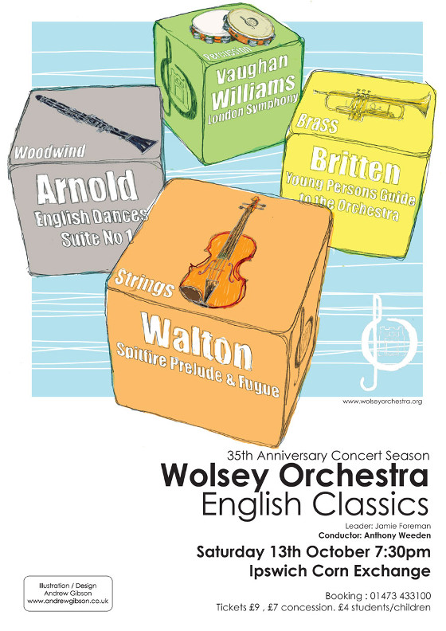
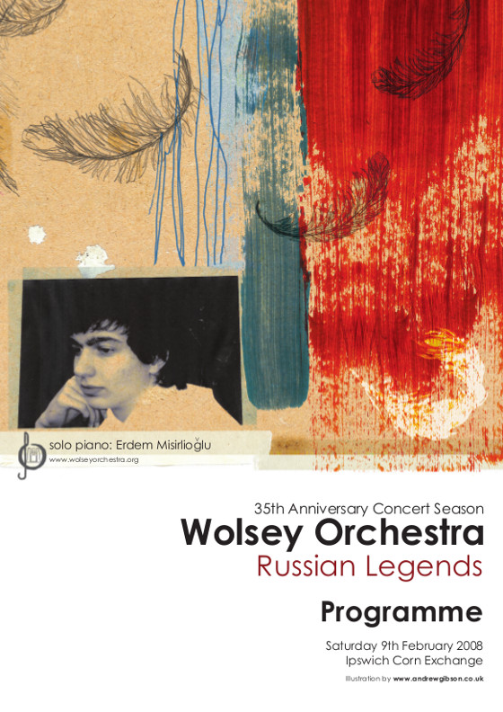
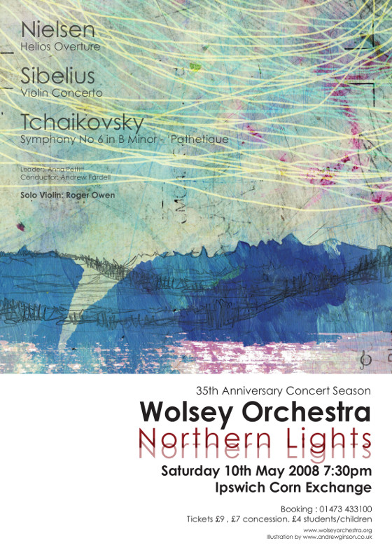

Saturday 13 October 2007

Saturday 09 February 2008

Saturday 10 May 2008
The Wolsey Orchestra is a member of Making Music, formerly the National Federation of Music Societies, which represents and supports amateur choirs, orchestras and music promoters throughout the UK
To keep up to date with Wolsey Orchestra is doing, visit one of our social media channels